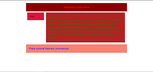

Menu
Treść
Szablon pływający (płynny szablon)
Przy zmianie szerokości okna przeglądarki zmieniać się będzie szerokość kolumn.
Najczęściej zmiana szerokości dotyczy tylko wybranych kolumn np. kolumna menu
pozostaje niezmieniona, pozostałe kolumny zmieniaja się płynnie w stosunku do
szerokości okna.
